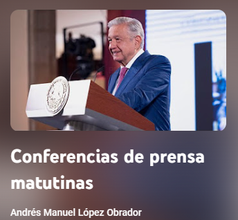
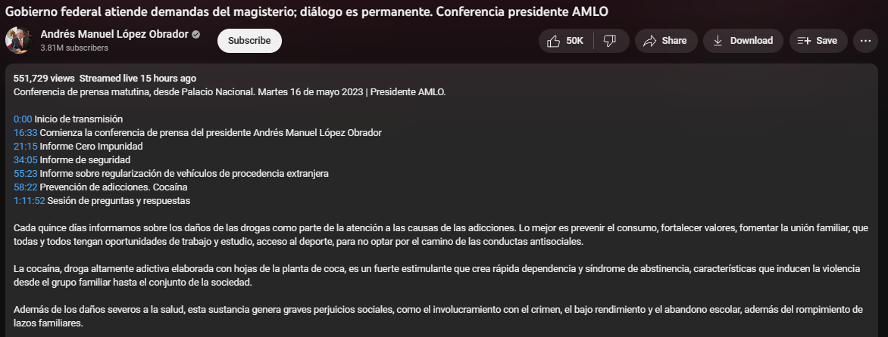

Introducción
El objetivo es elaborar un tablero que muestre una gráfica en linea de tiempo, con cortes semanales, de los principales temas de interés nacional e internacional, desde el punto de vista oficialista de la presidencia de Andrés Manuel López Obrador.
Planteamiento del problema
Para realizar esta tarea usaremos las mañaneras que ha estado haciendo el presidente, las cuales las tomaremos del canal de Youtube oficial del presidente. Después, preprocesaremos los datos para optimizar tanto el tiempo como el resultado del modelo que usaremos para extraer los principales temas (topic modeling).

Este modelo sera Asignación Latente de Dirichlet (LDA por sus siglas en ingles), en el cual cada documento se considera una mezcla de varios temas latentes, y cada tema se define como una distribución de probabilidad sobre un conjunto de palabras. Para finalizar, analizaremos los resultados e identificaremos los temas principales hablamos en las mañaneras en cada semana.
Obtención de datos
El inicio de este proyecto radica en la adquisición de datos. En un principio, pensamos en utilizar las transcripciones de las conferencias matutinas, disponibles en un repositorio de GitHub llamado “conferencias matutinas AMLO”. Este repositorio alberga todas las transcripciones de las conferencias desde la primera hasta la más reciente. No obstante, nos enfrentamos a un desafío significativo: al depurar estos datos, nos encontraríamos con un exceso de contenido irrelevante proveniente de las conversaciones del presidente con los periodistas entrevistadores.

Despues exploramos otras opciones y descubrimos que los videos de las conferencias matutinas publicados en YouTube incluyen una descripción donde condensan la información tratada en el respectivo día. Optamos por esta alternativa, ya que toda la información relevante estaba ya sintetizada en dichas descripciones, eliminando la necesidad de lidiar con datos irrelevantes.
Llamada a API de YouTube
El siguiente paso en nuestro proceso es la extracción de las descripciones de cada conferencia matutina. Dada la cantidad existente de alrededor de 1,100 vıdeos, la extracción manual no es una opción viable. Tras una investigación preliminar, descubrimos la API de YouTube, una herramienta gratuita que resulta ser de gran utilidad para nuestra tarea.


Todas las conferencias matutinas se encuentran agrupadas en una lista de reproducción creada por el canal oficial del presidente Andrés Manuel López Obrador. Hemos determinado que, mediante una solicitud a la API de YouTube, podemos recopilar toda la información (título, fecha de publicación, descripción, etc.) de cada video contenido en esta lista de reproducción.
Proyecto PLN: Universidad de Sonora - 2023